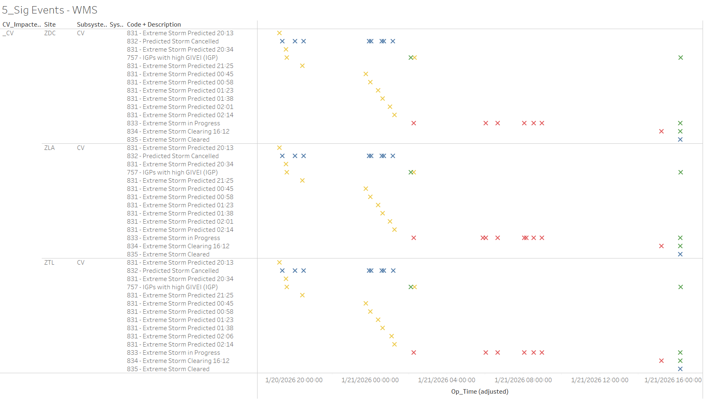
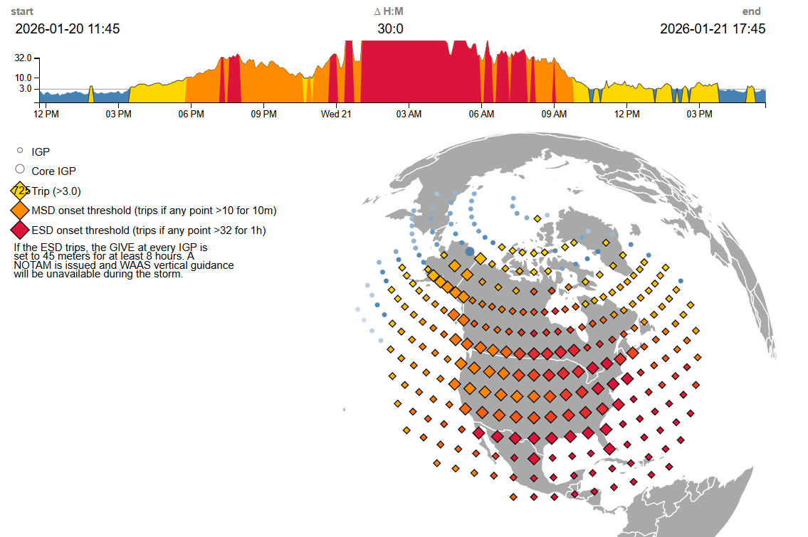

Weekly Highlights 20260121-20260128
1/19-1/21 - G4 Geomagnetic Storms
- 1/19 21:03 - All C&Vs alarmed with SE 757 IGPs with High GIVEI; G4 (Severe) Geomagnetic Storm Alert -- ref LIR 1107305224; SEs rescinded at 1/20 01:32 (~162456 seconds)
- 1/20 19:13 - All C&Vs alarmed with SE 831
Extreme Storm Predicted 20:13; G4
(Severe) Geomagnetic Storm Alert
Issued
- Multiple SE 831s and SE 832 Extreme Storm Cancelled until SE 833
- 1/20 19:37 - All C&Vs alarmed with SE 757 IGPs with High GIVEI; SEs rescinded at 1/20 02:07 (~23391 seconds)
- 1/21 02:15 - All C&Vs alarmed with
SE 833 Extreme Storm in Progress;
WAAS Service is degraded due to Solar Storm activity. FDC NOTAM 6/5437 issued.-- ref LIR 1107958624 - 1/21 02:17 - All C&Vs alarmed with SE 757 IGPs with High GIVEI...
- 1/21 15:12 - All C&Vs received SE 834 Extreme Storm Clearing 16:12...
- 1/21 16:12 - All C&Vs received SE 835 Extreme Storm Cleared; SEs 834 and 757 rescinded; High IGPs / Degraded for ~50224 seconds


1/21 - ZSU Subframe Reasonability
- 1/21 00:43 - ZSU all WREs alarmed with SE 728 Subframe Reasonability and PID WRS Down for all C&Vs
1/21 - ZOA WRE-A Power Work
- 1/21 05:17 - ZOA WRE-A to Maintenance for
shutdown to faciltate CM on CKT BKR panel that powers cabinet per ZOA-- ref LIR 1107932924; restored to Normal at 1/21 08:40
1/21-1/28 - L1/L2 Bias Errors
- 1/21 08:01 - CDB L1/L2 Bias Error
- 1/25 14:33 - YYR L1/L2 Bias Error
- 1/26 02:30 - YYR L1/L2 Bias Error
- 1/27 05:51 - YYR L1/L2 Bias Error
- 1/28 03:59 - YYR WRS alarmed with SE 721 PID WRS Down for ZDC Only; ongoing comm issues / loss of redundancy since 1/25...
1/21 - CM1 L5 Signal Quality
- 1/21 09:58 - CM1 GUS alarmed with SE 134 L5 Signal Quality Degraded; SE cleared after ~92 seconds
1/24 - DX1 GUS TAP-B SNMP Restart
- 1/24 12:34 - DX1 GUS TAP-B SNMP Restart
- 1/25 06:47 - DX1 GUS TAP-B SNMP Restart
1/27 - HNL WRE-C Fault
- 1/27 07:04 - HNL WRE-C Faulted with SEs 53 and 59;
Freq Std alarm code
F3 - Ionizer Filament; Control Power cleared alarm code and restored to Normal at 1/27 08:05
Various Comm Impacts
* Only captures major / long-term comm outages
CDB Comms
- 1/21 10:57 - CDB Ring 1 comms down hard; line cleared at 1/21 11:05 (~446 seconds)
- 1/22 22:35 - CDB Ring 2 comms down hard; line came back up to flapping at 1/22 23:03 (~1646 seconds); last event cleared at 1/22 23:09 (~166 seconds total)
- 1/23 02:39 - CDB Ring 2 comms down hard; line cleared at 1/23 03:05 (~1549 seconds)
- 1/23 04:01 - CDB Ring 2 comms down hard; line cleared at 1/23 04:18 (~1027 seconds)
- 1/26 12:44 - CDB Ring 2 comms flapping until down hard at 1/26 12:48; line cleared at 1/26 13:02 (~940 seconds total)
ZDC-ZAU Comms
- 1/21 20:47 - ZDC-ZAU Ring 2 ALT comms (ZAU port ref: S0/1/0:0) down hard...
- 1/22 12:45 - ZDC-ZAU Ring 2 ALT comms (ZAU port ref: S0/1/0:0) returned but flapping (~57471 seconds down); down hard again at 1/22 13:42...
- 1/22 17:01 - Mulitple comms impacted at ZDC COR-A for ~20 seconds
- 1/22 17:03 - ZDC-ZAU Ring 2 ALT comms (ZAU port ref: S0/1/1:0) down hard; line cleared at 1/22 17:39 (~2132 seconds); ZAU port ref: S0/1/0:0 ALT line still down hard...
- 1/22 17:07 - Mulitple comms impacted at ZDC COR-A for ~20 seconds
- 1/22 17:56 - ZDC-ZAU Ring 2 ALT comms (ZAU port ref: S0/1/1:0) flapping; last event cleared at 1/22 18:07 (~281 seconds total)
- 1/22 18:22 - ZDC-ZAU Ring 2 ALT comms (ZAU port ref: S0/1/0:0) cleared (~77719 seconds; down since 1/21)
Other Sites
- 1/22 09:23 - OTZ Ring 1 ALT / Ring 2 PRI comms flapping; last events cleared at 1/22 09:33 (~408 seconds total)
- 1/24 06:07 - MX-ZTL Ring 1 Ethernet comms down
hard -- OFFLINE; lines cleared at 1/24
06:10 (~161 seconds)
- 1/24 06:11 - MSD L1/L2 Bias Error
- 1/24 06:32 - MX-ZTL Ring 1 Ethernet comms down
hard -- OFFLINE; lines cleared at 1/24
06:34 (~100 seconds)
- 1/24 06:35 - MPR L1/L2 Bias Error
- 1/25 09:54 - YYR Ring 1 comms flapping until down hard at 1/25 10:07...
- 1/25 09:57 - YFB Ring 1 comms flapping until down hard at 1/25 10:02...
- 1/26 17:56 - ZSU Ring 1 PRI / Ring 2 ALT comms down hard; line cleared at 1/26 18:31 (~2133 seconds)
- 1/27 19:53 - BET + BRW + OTZ Ring 1 PRI / Ring 2 ALT comms down hard; all lines cleared at 1/27 20:16 (~1385 seconds)
- 1/27 20:22 - BET + BRW + OTZ Ring 1 PRI / Ring 2 ALT comms down hard; all lines cleared at 1/27 20:43 (~1254 seconds)
- 1/27 22:56 - BET + BRW + OTZ Ring 1 PRI / Ring 2 ALT comms down hard; all lines cleared at 1/27 23:12 (~997 seconds)
1/25/26 YYR / YFB Ring 1 Comms Down
ISR 0125-0363 ZAU<->YYR / YFB. Net1 down
-- ref LIR
1109439124
- 1/25 09:54 - YYR Ring 1 comms flapping until down hard at 1/25 10:07...
- 1/25 09:57 - YFB Ring 1 comms flapping until down hard at 1/25 10:02...
5/11/23 Mexico Ring 2 Down Hard...
- 5/11/23 17:01 - MX Ring 2 SatCom upgrade begins; MX Ring 2 OFFLINE until upgrade troubleshooting is complete...
- Targeting network upgrade in CY26
List of current offline WREs
List of current offline WREs -- ref WAAS Status Monitor
All Depot shipments to Mexico are halted until the customs process can be finalized
Currently working to assess MX Inventory to determine equipment refresh and restoration needs...
- MMD WRE-C - 10/20/25-... - Good Freq Std swapped into WRE-A to restore -- ref LIR 211505621
- MTP WRE-A - 9/23/25-...
- PCU Failed after power outage; PCU-B swapped
into WRE-A but DC output is non-functional...
ref LAD
1060696524
- Planning to swap PCU-C into WRE-A -- this will remove WRE-C from service, but allow us to restore WRE-A for analysis
- MTP WRE-B - 11/18/24-... - Receiver inits failing due to no DC Power from PCU; PCU swapped with PCU-A after PCU-A failed -- ref LIR 898330924
- MPR WRE-B - 5/3/24-... - Inits failing -- looks like a bad freq std; due to shipping issues, there is no spare Freq Std and no ETA to recover WRE-B... -- ref LIR 44170821

Major Events


Core I/F Status

Comm Events

Mexico Comm Status